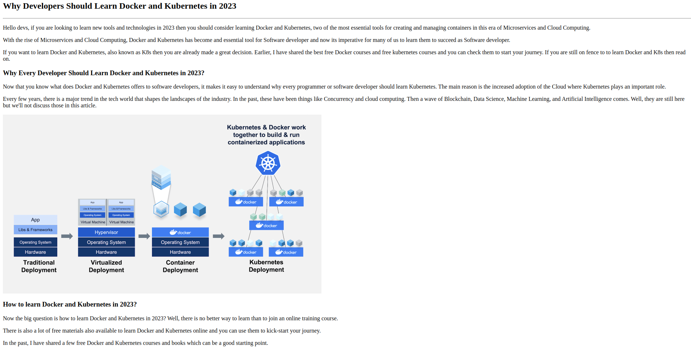
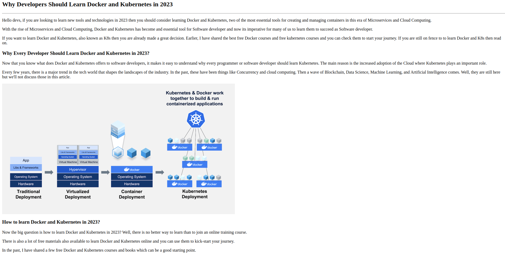

Why Developers Should Learn Docker and Kubernetes in 2023
Hello devs, if you are looking to learn new tools and technologies in
2023 then you should consider learning Docker and Kubernetes, two of the
most essential tools for creating and managing containers in this era of
Microservices and Cloud Computing.
With the rise of Microservices and Cloud Computing, Docker and
Kubernetes has become and essential tool for Software developer and now
its imperative for many of us to learn them to succeed as Software
developer.
If you want to learn Docker and Kubernetes, also known as K8s then you
are already made a great decision. Earlier, I have shared the best free
Docker courses and free kubernetes courses and you can check them to
start your journey. If you are still on fence to to learn Docker and K8s
then read on.
 
